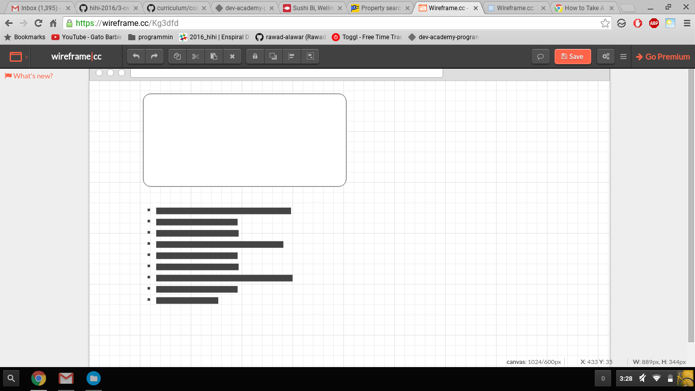
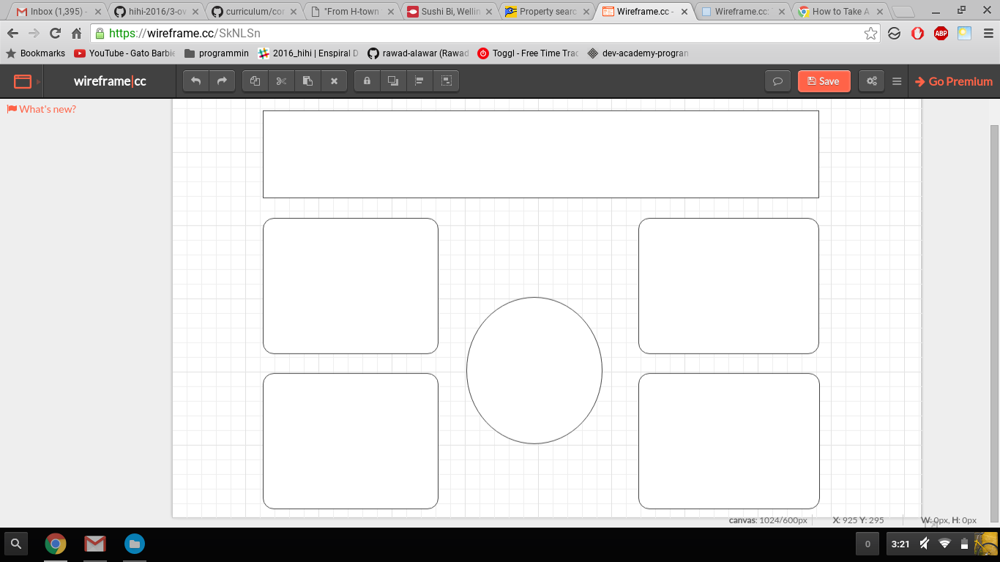
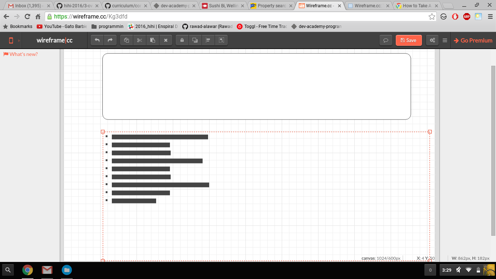
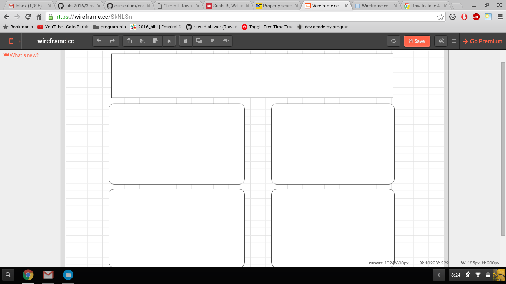

A responsive site is one that adapts as the screen size changes. For example, the website would respond differently when opened on a mobile device than on a desktop computer. Responsiveness is important because people are accessing the web from multiple types of devices with varying screen sizes.
Mobile first design is the building of a website from a small-screen prospective and then scaling the website up for larger screens.
Frameworks are tools that web developers can use to build websites more quickly. A framework is a pre-built template that can easily be customized.
A wireframe is a bare-bones draft of a websites design. Wireframing is useful because it helps a developer organize the websites indexes. The parts of my wireframe that I did not know how to implement inlcude the circle in the middle and the box distinctions among the categories. Below are wireframes I created for this website.
   